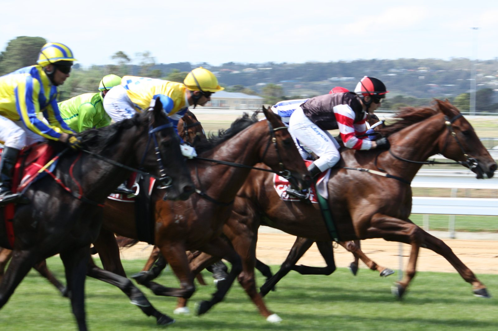

Magnitude y Stradale marcan los mejores cronos de la mañana en Keeneland antes de la Breeders' Cup
El ganador de la Dubai World Cup trabajó cinco furlongs en 1:00,60 con Flavien Prat, el mejor tiempo de la mañana a esa distancia, compartido, mientras los candidatos a la Breeders' Cup ultiman su preparación.

Prat llegó desde Nueva York para subirse a Magnitude (Not This Time) después del primer mantenimiento de la pista. Lo acompañó Publisher (American Pharoah), colocado en Grado I, y el crono de 1:00,60 fue el mejor entre 24 trabajos a esa distancia, compartido con otro ejemplar. «Un buen, buen trabajo. Fue prácticamente lo mismo que la semana pasada. Magnitude está bien, se mueve bien», resumió el jockey.
La monta tiene historia. Jose Ortiz, su jinete habitual, prefirió quedarse con Golden Tempo (Curlin), doble ganador clásico que también apunta a la Breeders' Cup Classic (Grado I) con Cherie DeVaux.
Chad Brown sacó a la pista a tres de sus cartas. Fully Subscribed (Tiz the Law), de Klaravich Stables y una de las probables favoritas del Distaff, llega con tres victorias seguidas, las dos últimas en Grado I. Hizo la media milla en 49,80 s en su primer trabajo desde que ganó la Spinster en este mismo hipódromo. Kathynmarissa (American Pharoah), de cinco años, marcó 50,20 s pensando en la Filly and Mare Turf; viene de imponerse en la Flower Bowl (Grado II) el 1 de octubre y antes en la Diana (Grado I) de Saratoga. Segesta (Ghostzapper), criada y propiedad de Juddmonte y ganadora de la Jenny Wiley en primavera, igualó los 49,80 s.
Zulu Kingdom (Ten Sovereigns), vencedor de la Maker's Mark Mile, rodó la media milla en 49 s justos con la Mile en el horizonte. East Avenue (Medaglia d'Oro), de Brendan Walsh y destinado a la Dirt Mile, se quedó en 1:02,40 en los cinco furlongs.
El trabajo más rápido de toda la sesión fue el de Stradale (Yaupon), preparado por Steve Asmussen. Firmó 47,80 s en la media milla, el mejor de 81 a esa distancia, con la vista puesta en el Sprint.
Las preinscripciones para las catorce pruebas del campeonato se cierran el lunes 19 de octubre a mediodía, hora del este de Estados Unidos. Las listas se publicarán el miércoles 21.
Por Martín Larrañeta